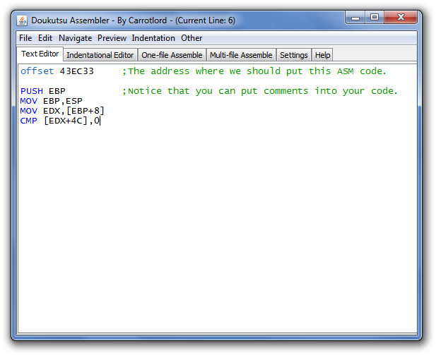
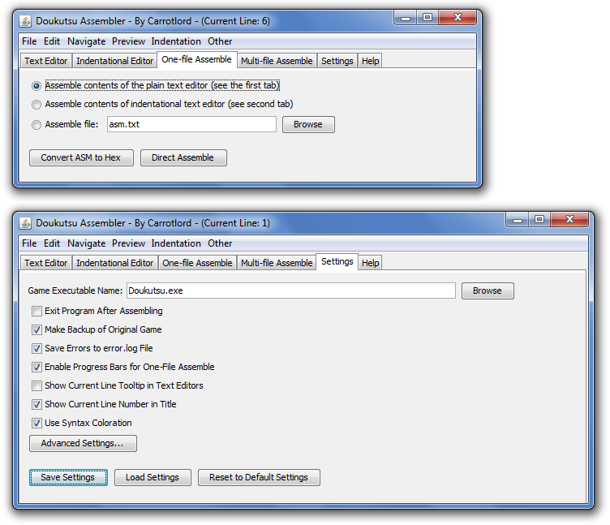

|
What is the Doukutsu Assembler? The Doukutsu Assembler is an assembly language (32-bit x86) compiler made specifically for Doukutsu Monogatari executable hacking. There are several features included in this Assembler that aren't available in OllyDbg*, mainly the dynamic labeling system. However, it's important to know that this Assembler should only be a supplement to OllyDbg, not a replacement. *If you're new to ASM or something: OllyDbg is a 32-bit debugger and disassembler commonly used for modifying the Cave Story exe. Download it here. So, how do you use the Doukutsu Assembler program? First, double-click the file Doukutsu Assembler.jar to run it. You should see a window pop up with a simple text editor in it. Next, you should type your "assembly source code" into that text editor. Specify an offset you want your ASM code to start at. After that, you just type in ASM instructions directly into the box, like so:  Make sure you save your work as a .txt file by going to File > Save As... or by hitting the keyboard shortcut Ctrl+S. Now, all pointers are assumed to be DWORD-sized unless otherwise stated, so MOV EDX,[EBP+8] actually means MOV EDX,DWORD PTR SS:[EBP+8]. The DWORD and PTR DS:/PTR SS: parts are totally optional. The Doukutsu Assembler also supports 3 kinds of comments. To see them, click here. So, aside from the user interface, how is this different from OllyDbg? Well, let's start using labels. The Dynamic Labeling System offset 43EC33 PUSH EBP MOV EBP,ESP MOV EDX,[EBP+8] CMP [EDX+4C],0 JE :facing_left ;labels must start with a colon (:) MOV [EDX+10],200 JMP :end_else1 :facing_left MOV [EDX+10],-200 :end_else1 XOR EAX,EAX MOV [EDX+78],EAX MOV [EDX+64],EAX JMP 43ED5A ;jumps can also go to normal addresses instead of labelsAlthough the above is just a simple block of code, you can get the gist of how the labels work. You can do a jump to a :labelname and the code will jump to wherever you placed that label. Essentially, it's a goto statement. This means you can move your labels around and the associated jumps will always go to those labels. You can cut and paste large chunks of code and rearrange them however you want, knowing that the jumps will always go to the correct location. OllyDbg only has static labels: labels that are assigned to one address only. They cannot be moved around except by manually renaming them, and even then your JMP label statement doesn't go to that new label. It just turns into a normal jump (like JMP numerical value). Not exactly helpful. OllyDbg makes designing NPCs and Weapons on a large-scale difficult: whenever you want to insert a new feature or do some debugging, you have to move around code. A simple binary copy & paste will not solve things - you still have to recalculate some of the jumps and calls. In any complex NPC/Weapon hack, this can get very annoying. But, if you use the Doukutsu Assembler, you can write your code with labels, eliminating this problem entirely. Now, when you're done, just click on the "One-File Assemble" tab. It has some options to convert the code in the textbox (or a file) into real hex data: either use "Convert ASM code to hex", which will spit out the hex dump of your code into a file in the Output/ folder, or you can use "Direct Assemble", which takes ASM code, compiles it, and applies the hack directly to the game executable. You can change the game executable that the Assembler uses in the Settings tab. Convenient, no?  There's more stuff than just this. You should take a look at the in-depth label guide and the other features this Assembler has. You should get an idea of the variety of instructions the Assembler can support by looking at the supported instructions page. It's good to understand how to add fancy new instructions by using defines. Check out the syntax guide if you're having trouble getting your code to assemble properly, or if you want to see if you can get away with some sloppy syntax (hint: you can). Figure out what the buttons and settings do in the user interface guide. Back to the Table of Contents |